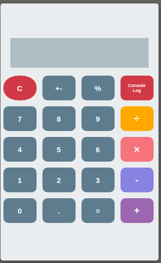
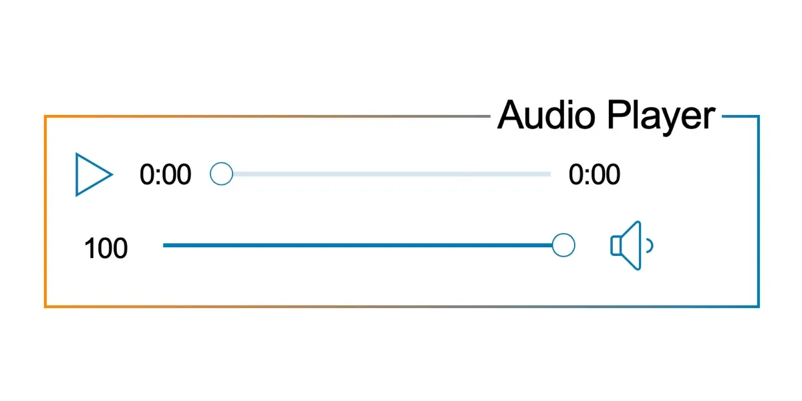
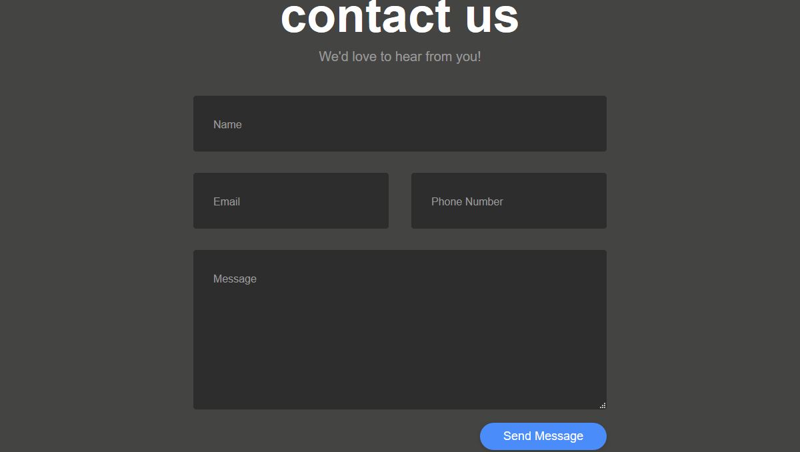

About Me
As a 23-year-old aspiring front-end developer with a background in technical support for a telecommunications company focused on cross-selling, I'm constantly seeking new challenges and opportunities for growth. I'm passionate about using technology to solve problems and create engaging user experiences. My technical skills include proficiency in HTML, CSS, and JavaScript, and I'm always looking to expand my knowledge through self-study and hands-on experience. In my free time, I enjoy experimenting with new coding techniques, learning about emerging technologies, and collaborating with others in the programming community. I'm a dedicated team player who is committed to achieving results, and I thrive in fast-paced, dynamic environments.
Projects
-  Designed and created a simple calculator using HTML, CSS, and JavaScript.
-  Built a music player with HTML, CSS, and JavaScript that features functions like play, pause, fast forward, and rewind.
-  Created a contact form with name, email, and message fields on a website, along with form validation using HTML, CSS, and JavaScript.
Skills
- Proficient in HTML, CSS, and JavaScript:I am proficient in HTML, CSS, and JavaScript. I have a solid foundation in these essential front-end technologies, which enables me to design and develop responsive, visually appealing, and functional websites and web applications.
- Familiarity with front-end frameworks:I am familiar with front-end frameworks like React and Vue.js. These frameworks provide me with the tools to create complex and dynamic user interfaces, and I am always eager to learn new ways to enhance my skills in these areas.
- Strong problem-solving and analytical skills: I also have strong problem-solving and analytical skills. As a front-end programmer, I understand that finding solutions to technical problems is an essential part of the job, and I enjoy the challenge of coming up with innovative and effective solutions to ensure the best user experience.
Testimonials
"I highly recommend Javier for their outstanding work as a junior front-end developer. During their time working with me, Javier displayed a remarkable range of technical skills, including their expertise in IT support. Their ability to solve complex problems and tackle challenges was truly impressive. Javier was a crucial part of the team and consistently delivered high-quality work on time. Their commitment to the project and meticulous attention to detail were truly commendable. I would strongly recommend Javier for any position in the IT industry."
- Joe Doe, IT Manager.
"I had the pleasure of working with Javier on several freelance projects as a junior front-end developer. During our collaboration, Javier demonstrated a strong aptitude for front-end development and a deep understanding of IT support. They were always eager to learn and take on new challenges, making them an invaluable member of our team. Javier consistently produced top-quality work and met tight deadlines, all while maintaining a positive and collaborative attitude. Their technical skills and attention to detail were exceptional, and they always went above and beyond to ensure that projects were successful. I wholeheartedly endorse Javier for any role in the IT industry."
- Jane Doe, Senior Front-End Developer.